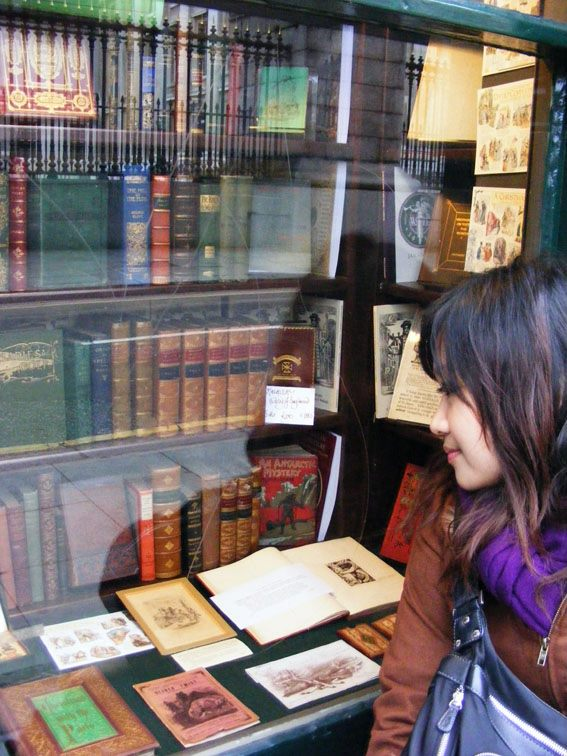

葉芝迎個人工作室
ABOUT
品牌專案
個案設計
FACEBOOK

工作室成立時間
2014年正式立案至今
個人經歷
bossini 香港商堡獅龍有限公司台灣分公司 / 品牌形象部/設計專員
台灣樂金生活健康股份有限公司 品牌部門 / 品牌設計企劃
金星娛樂股份有限公司 經紀部 / 公關企劃
城邦文化事業股份有限公司 Lavie雜誌 / 網路部資深編輯
現任 葉芝迎個人工作室 / 負責人
設計類/企劃文案工作經驗 自2001年至今
服務項目
平面設計 / 網頁設計 / 整體視覺規劃 / CIS規劃 / 包裝設計 / 店面形象規劃 / 文案撰寫